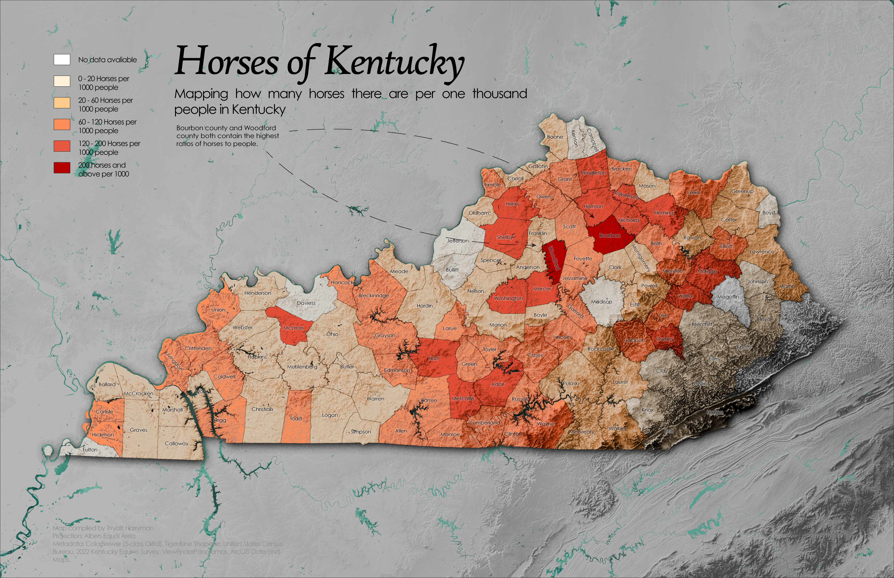
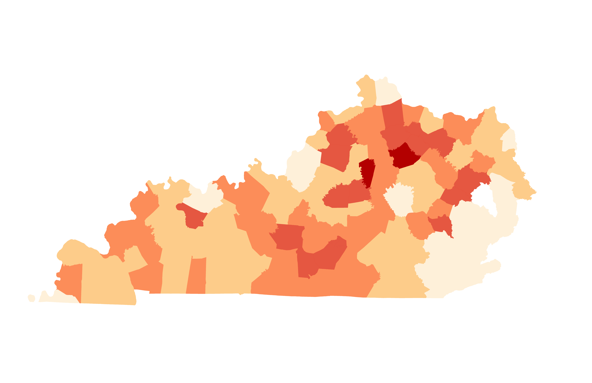
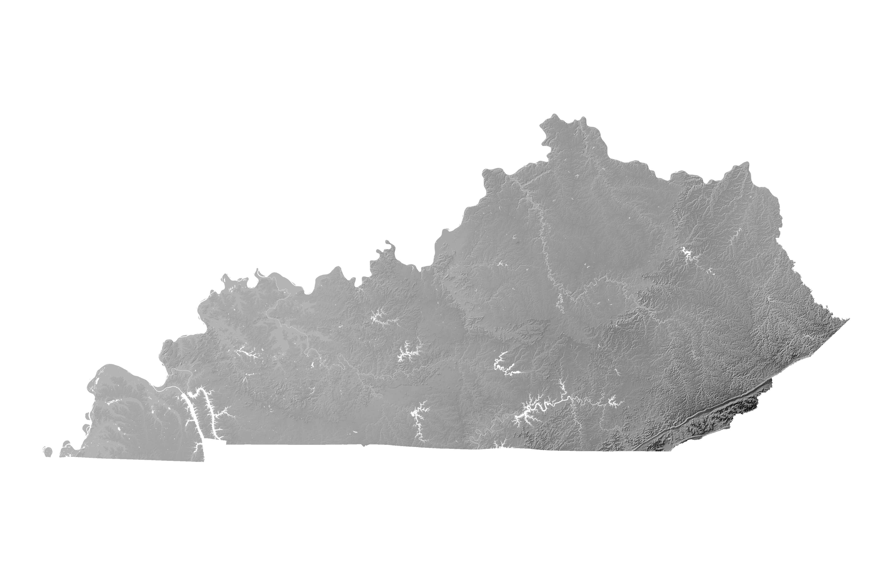
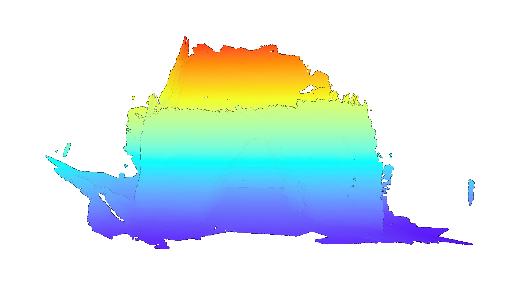
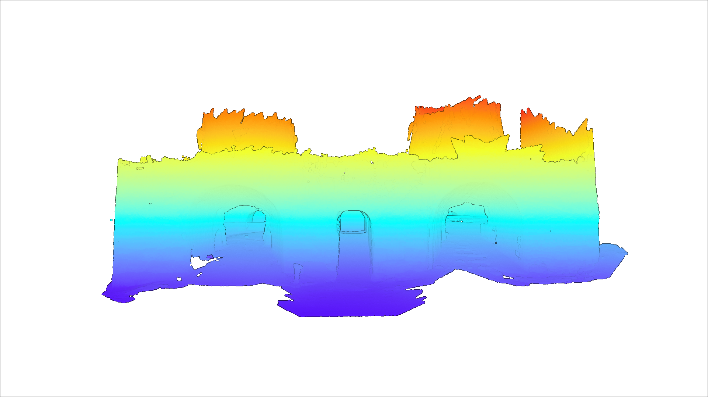
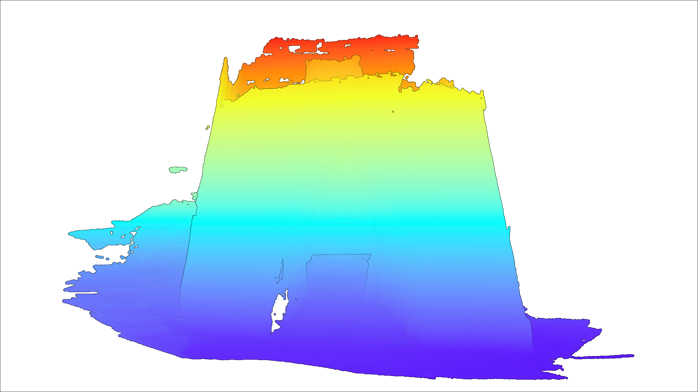

Wyatt Harryman
GIS | CARTOGRAPHY | SPATIAL VISUALIZATION
Geography graduate specializing in geographic information systems, cartographic design, spatial analysis, and geographic visualization.
VIEW MY WORK →Horses of Kentucky



Objective
Create a county-level map showing the relative concentration of horses across Kentucky while incorporating a shaded relief to provide geographic context.
My Role
GIS processing, spatial analysis, cartographic design, terrain visualization, and final graphic production.
Workflow
Data
- Kentucky Equine Survey
- U.S. Census Data
- TIGER/Line Shapefiles
- DEM from Viewfinder Panoramas
Key Techniques
- Population table joining
- Normalization
- DEM processing & hillshade
- Shaded Relief in Blender
- Adobe CC for final layout
Kentucky Iron Industry
<!DOCTYPE html>
<html>
<head>
<meta charset="utf-8" />
<title>Furnaces</title>
<meta name="viewport" content="initial-scale=1,maximum-scale=1,user-scalable=no" />
<link rel="preconnect" href="https://fonts.googleapis.com" />
<link rel="preconnect" href="https://fonts.gstatic.com" crossorigin />
<link href="https://fonts.googleapis.com/css2?family=Open+Sans:wght@400;800&display=swap" rel="stylesheet" />
<link rel="preconnect" href="https://fonts.googleapis.com">
<link rel="preconnect" href="https://fonts.gstatic.com" crossorigin>
<link href="https://fonts.googleapis.com/css2?family=Pirata+One&display=swap" rel="stylesheet">
<style>
/* Set margin/padding to fit border in box model */
* {
box-sizing: border-box;
margin: 0;
padding: 0;
}
/* Define styles on body (and all descendants) */
body {
margin: 0;
padding: 0;
font-family: "Open Sans", sans-serif;
font-weight: 400;
color: rgb(32, 32, 32);
background-color: rgb(236, 232, 228);
}
.pirata-one-regular {
font-family: "Pirata One", system-ui;
font-weight: 400;
font-style: normal;
}
/* Define styles for the headings */
h1 {
font-size: 3rem;
font-weight: bolder;
margin: 10px 0;
padding: 0;
color: rgb(161, 48, 34);
}
h2 {
font-size: 2rem;
font-weight: 800;
margin: 0;
padding: 0;
}
h3 {
font-size: 1.5rem;
font-weight: bold;
margin-bottom: 10px;
}
h4 {
font-size: 1.5rem;
font-weight: bold;
margin-bottom: 10px;
}
h5 {
font-size: 1.5rem;
font-weight: bold;
margin-bottom: 10px;
}
/* Define styles for the paragraph */
p {
font-size: 1.3rem;
font-weight: 400;
margin: 0 0 10px 0;
padding: 0;
}
a:link,
a:visited {
color: rgb(12, 73, 34);
}
a:hover {
color: rgb(86, 86, 86);
text-decoration: none;
}
section {
width: 80%;
margin: 0 auto;
}
footer {
width: 80%;
margin: 0 auto;
color: rgb(100, 100, 100);
}
iframe {
border: 1px solid rgb(200, 200, 200);
border-radius: 10px;
margin-top: 20px;
}
.caption {
font-size: 0.8rem;
font-weight: 400;
font-style: italic;
margin: 0;
padding: 0;
color: rgb(100, 100, 100);
}
.title {
text-align: left;
margin: 20px;
}
/* Set up a container for the two columns */
.container {
display: flex;
flex-wrap: wrap;
justify-content: space-between;
}
/* Define styles for the left column */
.left-column {
flex-basis: 40%;
padding: 20px;
margin-bottom: 20px;
}
/* Define styles for the right column */
.right-column {
flex-basis: 55%;
background-color: rgba(255, 255, 255, 0.35);
border-radius: 10px;
padding: 20px;
margin-bottom: 20px;
}
/* Round image corners for images inside the right-column */
.right-column img {
border-radius: 10px;
}
/* Media query for small screens */
/* For screens up to 768px, apply these rules. */
@media (max-width: 768px) {
/* Change to a single column layout */
.container {
flex-direction: column;
}
/* Set full width for both columns */
.left-column,
.right-column {
flex-basis: 100%;
}
}
</style>
</head>
<body>
<section>
<iframe title="Furnaces" width="100%" height="576" src="https://ion.cesium.com/stories/viewer/?id=06d20e67-3d86-48ff-975b-64bdc2f528c8" frameborder="0" allow="fullscreen" allowfullscreen="true" mozallowfullscreen="true" webkitallowfullscreen="true"></iframe>
<p class="caption">Map figure 1: Explore the iron furnaces yourself using cesium ion!</p>
<div class="title">
<h1 class="pirata-one-regular">The Kentucky Iron Industry</h1>
<h2 class="sans-serif">Iron furnaces found in Estill county and Bath county!</h2>
</div>
<div class="container">
<div class="left-column">
<h3>What are these structures?</h3>
<p>
The Iron furnace industry is a forgotten industry of Kentucky that thrived during the late 18th into the late 19th century. These structures were used to melt iron found in the surrounding areas in eastern Kentucky.
This molten iron then would be used to build railways, cannonballs, and more. These abandoned sites can be found across Kentucky primarily in eastern Kentucky but also in central Kentucky.
The first two furnaces are the Cottage furnace and the Fitchburg furnace in Estill county, Kentucky. The Cottage furnace was built in 1854 and was in operation until 1879. The Fitchburg furnace was built in 1867 and fired its last blast in 1873.
The last furnace in the presentation is the Slate furnace in Bath county, Kentucky. This furnace was built in 1791 and was fully operational until 1838.
</p>
<h4>What was the goal of this project?</h4>
<p>
The goal of this project was to be able to capture these historic furnaces in lidar as the data from KyFromAbove only could capture the tops of these structures. In the process, this project also preserved these historical buildings in 3D, allowing for
people who can't visit these furnaces to view them from home even after these structures are gone.
</p>
<h5>Sources</h5>
<p>
Visualizations provided by
<a href="https://kyfromabove.ky.gov/">KyFromAbove</a> in ArcGIS Pro and
Blender.
</p>
<p>
Page and visualizations created by Wyatt Harryman for GEO 409, Department of
Geography, University of Kentucky. Spring 2025.
</p>
</div>
<div class="right-column">
<h3>Visualizations </h3>
<img src="furnace.jpg" alt="Something about this map" width="100%" />
<p class="caption">Mapping the location of the furnaces, <a href="hi-res.pdf">download the hi-res version here!</a></p>
<img src="cottage-area.jpg" alt="Something about this map" width="100%" />
<p class="caption">Mapping the area around the Cottage furnace, <a href="cottage-area-hi-res.pdf">download the hi-res version here!</a></p>
<img src="fitchburg-area.jpg" alt="Something about the map" width="100%" />
<p class="caption">Mapping the area around the Fitchburg furnace, <a href="fitchburg-area-hi-res.pdf">download the hi-res version here!</a></p>
<img src="slate-area.jpg" alt="Something about the map" width="100%" />
<p class="caption">Mapping the area around the Slate furnace, <a href="slate-area-hi-res.pdf">download the hi-res version here!</a></p>
</div>
</div>
</section>
<footer>
<hr />
<img src="logo-color-400px.png" alt="UKy Arts and Sciences " width="300px">
</footer>
</body>
</html>



Objective
Map and document the historic iron furnace sites in Estill and Bath County, KY using LiDAR, 3D scanning, and interactive visualization. Create 3D and shaded relief visualizations to provide geographic context for the sites.
My Role
3D scanning, data processing, web development, and cartographic design.
Workflow
Data
- KyFromAbove
Key Techniques
- HTML web development
- 3D scanning & LiDAR processing
- Cesium ion & interactive visualization
- DEM processing & hillshade
ArcPy Automation
Objective
Automate a GIS workflow to save time and reduce manual steps
My Role
ArcPy scripting, geoprocessing, workflow design.